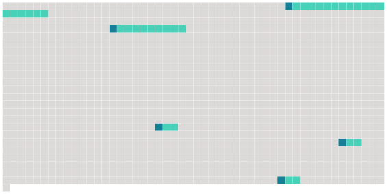

Longueur nb maillons : 5 mentions |
|
Après avoir procédé aux opérations de tirage au sort prévues par l'article 261, le maire transmet avant le 15 avril au greffe de la juridiction siège de la cour d'assises un exemplaire original de [la liste préparatoire de la liste annuelle du jury d'assises conformément au premier alinéa de l'article 261-1] [2 phrases]
Chapitre II : Dispositions relatives à la désignation et à la formation des citoyens assesseurs [12 phrases]
Le président de la commission prévue à l'article 262 adresse aux services de la police ou de la gendarmerie nationales territorialement compétents la liste des personnes figurant sur [la liste préparatoire] qui n'ont pas été inscrites sur la liste annuelle du jury d'assises afin que, conformément au 3 ° de l'article 10-5, ces services procèdent, avant le 1er septembre, à la consultation des traitements automatisés prévus à l'article 230-6. [2 phrases] Conformément à l'article 10-5, elle exclut de [la liste préparatoire] de la liste annuelle les personnes mentionnées aux 1 ° à 3 ° de cet article. [5 phrases]
Ils ne peuvent communiquer à des tiers les informations relatives à la situation des personnes inscrites sur [la liste préparatoire] dont ils ont eu connaissance dans l'exercice de leurs attributions. |
 |
Il est possible de télécharger la ressource sur la page Ortolang |
Si vous avez des questions ou vous voyez des erreurs, merci d'envoyer un mail à silvia.federzoni89@gmail.com |